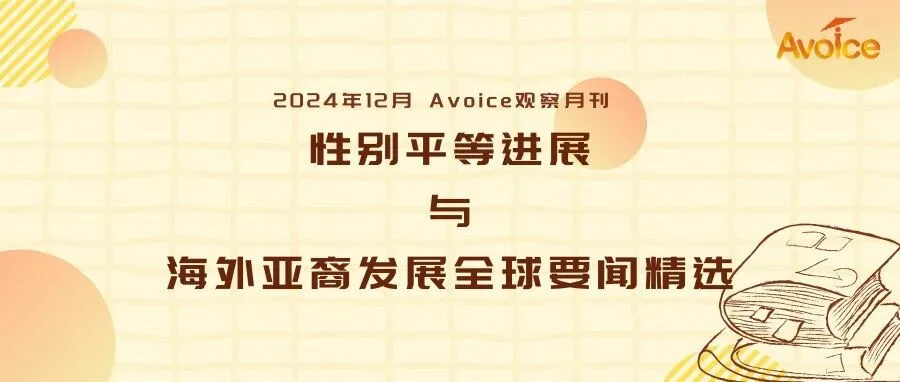

专栏引言：
从联合国安理会呼吁推动妇女在和平与安全议程中发挥更大领导力，到国际社会共同为即将到来的2025年国际妇女节奠定基调，性别平等事业在这一月继续推进。同时，亚裔群体在文化、健康和社会领域也取得了一系列突破性进展，如Sofronio Vasquez成为《美国之声》历史上首位亚裔冠军，彰显了亚裔艺术家在主流文化中的崛起；而研究揭示亚裔美国人卵巢癌生存率差异，也为公共健康政策提供了新的视角。然而，这个月同样见证了针对亚裔的暴力事件频发，从西雅图公交司机遭致命刺杀到法拉盛赌场抢劫枪击案，这些事件再次引发社会对种族暴力和公共安全的深切关注。综上，2024年12月的性别与亚裔动态不仅体现了全球性别与多元文化的进步，也提醒我们，推动平等与安全的道路依然漫长且充满挑战。
目录
Table of Contents
一、性别平等
News on Gender Equality
安理会辩论：联合国呼吁推动妇女在和平与安全议程中发挥更大领导力
2025年国际妇女节：为所有妇女和女孩：权利；平等；赋权
二、亚裔话语权
Voice of Asian
Sofronio Vasquez 成为《美国之声》首位亚裔及菲律宾冠军
加州州立大学研究揭示亚裔美国人群体卵巢癌生存差异
三、针对亚裔的暴力
Crime against Asian Community
西雅图公交车刺杀案：亚裔司机不幸遇害
伊利诺伊大学仇恨犯罪：亚裔学生受害
法拉盛赌场抢劫枪击案：华人伤亡
01
性别平等
News
安理会辩论：联合国呼吁推动妇女在和平与安全议程中发挥更大领导力
2024年12月3日，迪卡洛赞扬了巴基斯坦的马拉拉·优素福扎伊、瑞典的格雷塔·桑伯格和索马里的伊尔瓦德·艾尔曼等杰出女性领导者的事迹。TA指出，这些杰出的女性领导者证明了变革的可能性。
TA强调，必须培养新一代的领导者，特别是年轻妇女和女童，TA们站在重塑全球权力结构和推动和平的最前沿。迪卡洛援引了联合国秘书长关于《新和平议程》的政策简报，呼吁打破根深蒂固的父权制，这种制度长期以来助长了不平等和排斥。TA强调，只有打破传统的父权制规范，才能实现真正的和平与包容性安全。
联合国在安理会中呼吁女性在和平与安全议程中发挥更大领导力，不仅有助于打破性别壁垒，强化平等观念，更是推动全球性别平等事业进步。
相关链接：
联合国新闻. (2024, December 3). 安理会辩论：联合国呼吁推动妇女在和平与安全议程中发挥更大领导力.
https://news.un.org/zh/story/2024/12/1134016
News
2025年国际妇女节：为所有妇女和女孩：权利；平等；赋权
2025年3月8日国际妇女节主题为“为了所有妇女和女孩：权利、平等、赋权”，旨在纪念《北京宣言和行动纲要》30周年，推动性别平等和妇女赋权。
在联合国妇女署纪念《北京宣言和行动纲要》30周年的全球运动“为了所有妇女和女孩”的旗帜下，今年的国际妇女节是在三个关键领域采取行动的战斗口号：
1.促进妇女和女孩的权利：为妇女和女孩全面的人权不懈斗争，挑战一切形式的暴力、歧视和剥削。
2.促进性别平等：消除系统性障碍，废除父权制，改变根深蒂固的不平等现象，提高包括年轻人在内的边缘化妇女和女孩的声音，以确保包容性和赋权。
3.促进赋权：通过确保包容性地获得教育、就业、领导和决策空间来重新定义权力结构。优先考虑年轻女性和女孩领导和创新的机会。
国际妇女节对性别平等具有深远意义，通过纪念《北京宣言和行动纲要》30周年，呼吁采取行动促进妇女和女孩权利、性别平等及赋权，推动全球性别平等事业，共同缩小性别差距，应对当前挑战，确保妇女和女孩获得平等权利和机会。
相关链接：
联合国妇女署. (2024, December 11). 2025年国际妇女节：为所有妇女和女孩：权利；平等；赋权 . https://www.unwomen.org/en/news-stories/announcement/2024/12/international-womens-day-2025-for-all-women-and-girls-rights-equality-empowerment
02
亚裔话语权
News
Sofronio Vasquez 成为《美国之声》首位亚裔及菲律宾冠军
Sofronio Vasquez成为《美国之声》第26季的冠军，TA是该节目历史上首位亚裔及菲律宾裔夺冠选手 。这一消息在社交媒体上迅速引发热议，许多观众对TA展现出的卓越才华和情感表达给予高度评价，同时也为亚裔群体的文化代表性表示支持。
Sofronio Vasquez在比赛中以出色的演唱技艺打动了评委和观众，从初赛阶段的“四转椅”到决赛夜的精彩演绎，TA的表现令人难忘。TA的成功不仅为节目注入了新鲜的能量，也进一步提升了亚裔艺术家在全球音乐行业中的认可度。这季比赛的亮点之一是Vasquez与导师Michael Bublé的合作。Bublé的指导为Vasquez的表现增添了深度，学员们也为Bubléd带来启发。
Sofronio Vasquez的胜利不仅是个人成就，更是亚裔社区文化身份的重要体现。这次胜利彰显了多元文化背景的重要性，也在主流娱乐平台中为亚裔艺术家争取了更广阔的舞台。
相关链接：
萨阿德, N. (2024, December 11). 《美国之声》决赛：布布雷队的索夫罗尼奥·瓦斯奎兹获胜. 洛杉矶时报.
https://www.latimes.com/entertainment-arts/tv/story/2024-12-11/the-voice-season-26-winner-michael-buble-sofronio-vasquez
News
加州州立大学研究揭示亚裔美国人群体卵巢癌生存差异
一项由加州州立大学富勒顿分校Alice W. Lee博士领导的研究揭示了亚裔美国人不同亚群体在卵巢癌生存率方面存在显著差异。研究强调了将亚裔群体分解为具体亚群体进行癌症研究的重要性，并指出整体高生存率的观念无法准确反映每个亚裔亚群体的现实状况。
Alice W. Lee博士表示，传统上将亚裔作为单一群体分析的方式掩盖了亚群体之间的差异，导致癌症风险和结果的独特性被忽视。TA呼吁研究者在癌症流行病学和公共健康研究中采用更细化的分群方法，以更准确地理解健康结果的多样性，并为具体人群设计更具针对性的干预措施。
这项研究不仅为癌症研究领域提供了新的视角，也为公共健康政策制定提供了重要参考。TA强调了通过分群研究提升少数族裔健康结果公平性的潜力，并呼吁更多资源投入到亚裔亚群体的健康研究中。
相关链接：
麦考密克, B. (2024, December 11). 揭示亚裔美国人群体卵巢癌生存差异 . 美国医学管理学会期刊. https://www.ajmc.com/view/revealing-ovarian-cancer-survival-gaps-among-asian-american-subgroups
03
针对亚裔的暴力
News
西雅图公交车刺杀案：亚裔司机不幸遇害
2024年12月18日，西雅图70路公交车上发生了一起恶性案件。59岁的亚裔公交车司机肖恩·严（Shawn Yim）在与一名乘客理查德·西兹拉克（Richard Sislak）因开车窗问题争执时，遭到后者的致命刺杀。嫌犯随后逃离现场，但于数日后在另一辆公交车上被捕。另外，此嫌犯去年因刺杀室友被捕，但因证据不足被释放。
肖恩的遇害引发了社区的强烈关注和悲痛，多个亚裔组织呼吁加强对公共交通从业者的安全保护，同时敦促当局将此案作为仇恨犯罪处理。
相关链接：
格林, S. J. (2024, December 23). 西雅图公交司机被刺案：嫌犯被控谋杀. 西雅图时报. https://www.seattletimes.com/seattle-news/law-justice/man-accused-of-fatally-stabbing-seattle-bus-driver-charged-with-murder/
News
伊利诺伊大学仇恨犯罪：亚裔学生受害
2024年12月11日，印第安纳州布卢明顿市的联邦法院宣布，针对2023年发生的亚裔学生Z.F.被袭案件，判处袭击者比莉·戴维斯（Billie Davis）6年监禁。此案源于2023年1月，Z.F.在乘坐公交车时遭到戴维斯的多次刺击，嫌犯声称袭击是出于种族动机。
此判决被认为是对仇恨犯罪的明确警告，但也引发了对现行法律在遏制种族暴力方面是否足够有效的广泛讨论。亚裔群体和民权组织呼吁进一步加强法律和教育措施以防止类似事件的再次发生。
相关链接：
桑德斯, A. (2024, December 12). 刺伤亚裔学生头部7次的女子因仇恨犯罪被判6年监禁. 人物杂志. https://people.com/woman-who-stabbed-asian-university-of-bloomington-student-sentenced-in-hate-crime-8760896?utm_source=chatgpt.com
News
法拉盛赌场抢劫枪击案：华人伤亡
2024年12月19日，纽约皇后区法拉盛海特街一处疑似非法赌场发生抢劫枪击事件，造成两名华人男子严重受伤。根据纽约市警方的初步调查，三名疑似亚裔嫌疑人驾驶白色SUV到达现场，用枪威胁在场赌客，并向两名男子开枪。一名37岁华裔男子李云头部中弹身亡，另一名42岁男子右脸受伤。据悉，李云的家人捐献了TA的器官，让三个病患拥有了希望，附近社区对持续发生的暴力事件深感担忧。法拉盛华人社区呼吁加强治安措施，以确保居民安全。
相关链接：
金, 玉贻. (2025, January 2). 治安盲点法拉盛地下赌场频繁被抢劫 ["The Blind Spot Flushing Underground Casino Frequently Gets Robbed"]. 侨报网.
金, 玉贻. (2024, December 30). 华人社团法拉盛案发地哀悼抢劫枪击案受害者李云 ["The Chinese community in Flushing mourns the robbery shooting victim Li Yun"]. 侨报网. https://www.qiaobaous.com/article/192808.html?utm_source=chatgpt.com
* 注：本文所收录的信息仅用于分享交流，不代表Avoice的立场和观点
撰稿｜邱馨仪、董雨昕、商靖其
排版/封面｜王佳怡